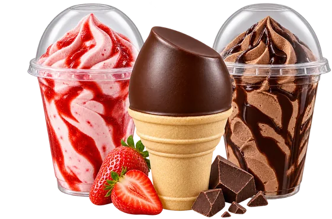
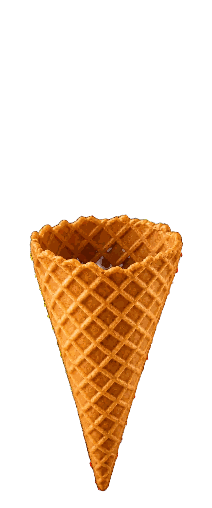
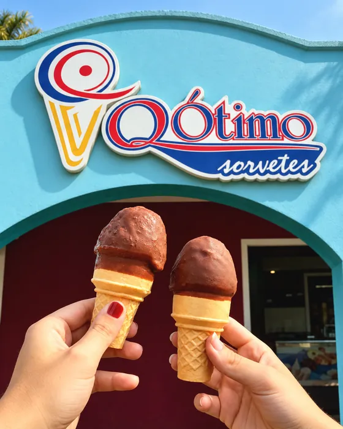
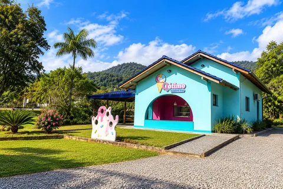
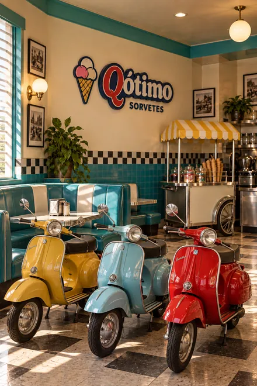
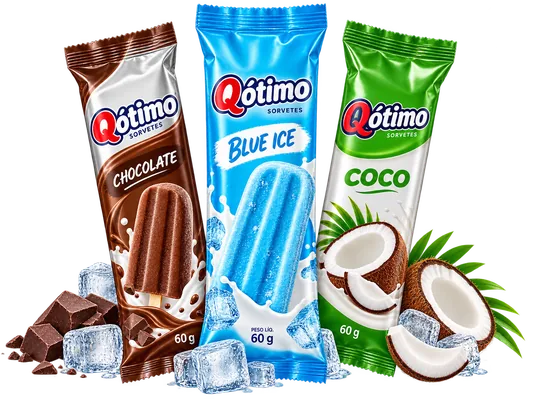
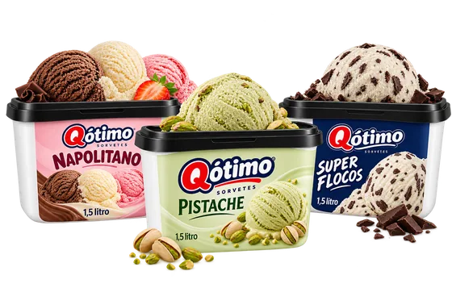
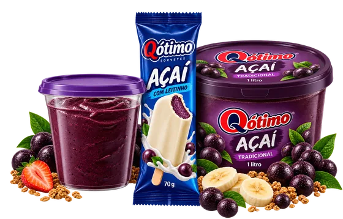

Tradicionais
Os favoritos de todos os dias.



Selecionamos os melhores ingredientes para o seu sabor.
Sorvetes sempre fresquinhos e irresistíveis.
Cada sabor é pensado para tornar seu dia melhor.
Sobre nós
Mais que sorvetes, uma trajetória de sonhos.
Com mais de duas décadas de trajetória, a empresa familiar Qótimo Sorvetes foi estabelecida em 2000 na cidade de Jaraguá do Sul/SC, realizando assim o sonho de Ademir e Renata de criar sorvetes que unissem qualidade e amor.
Ademir acumulou vasta experiência ao longo de muitos anos na Duas Rodas Industrial, onde teve a oportunidade de se familiarizar com o desenvolvimento e a produção das melhores matérias-primas para a fabricação de sorvetes.
Hoje, contando com a colaboração do filho mais velho, Igor, a Qótimo opera em um novo parque fabril com mais de 600 m², além de dispor de logística própria e seis sorveterias. A produção de açaí e uma variedade de sabores de sorvetes e picolés posicionam a empresa de maneira sólida para a expansão no varejo nacional.



Desde2000
2000 Ano de fundação, em Jaraguá do Sul/SC
600 m² Parque fabril próprio
6 sorveterias Sabor perto de você
Um sabor para cada momento
Quatro linhas, muitos momentos para saborear.
Os favoritos de todos os dias.

Refrescância em qualquer momento.

Mais sabores para a sua história.

Energia e sabor em várias formas.

Onde estamos
Sabor, carinho e momentos especiais em cada unidade.
Carregando catálogo…
Quer todas as linhas num arquivo só?
Baixar catálogo completo (PDF)